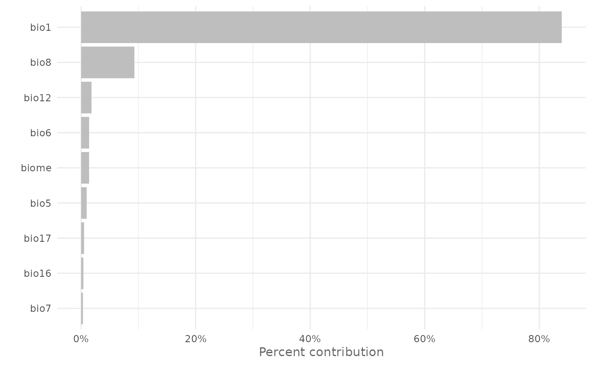
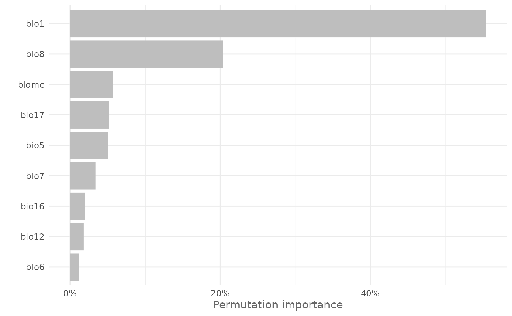
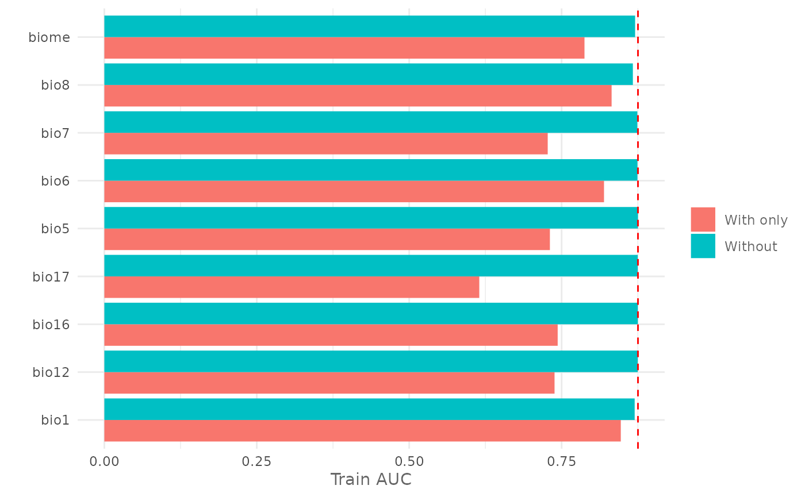
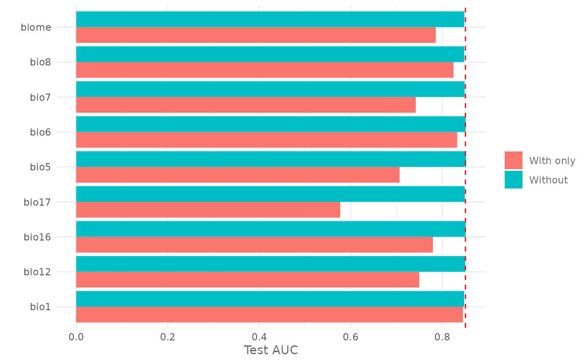
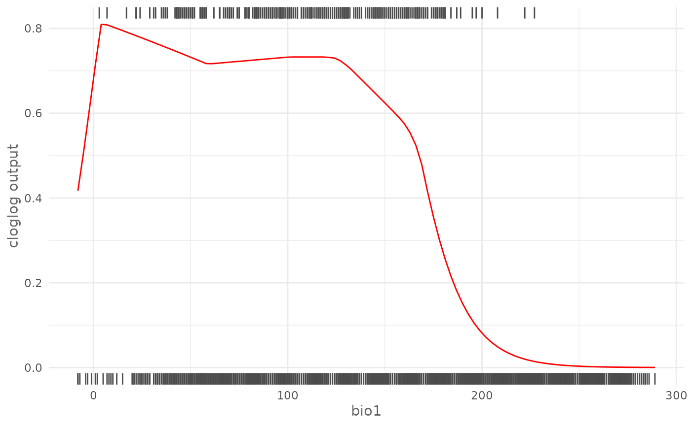
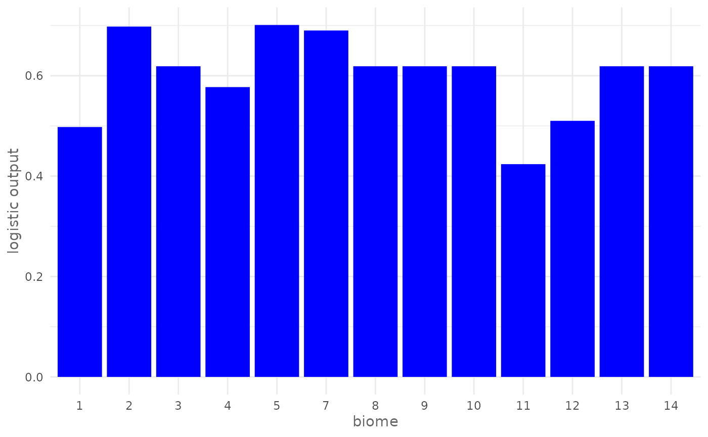
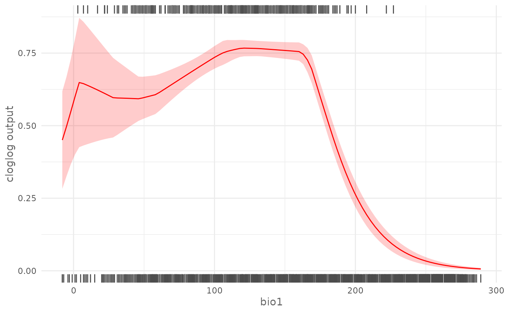

Intro
In the previous articles you have learned how to prepare the data for the analysis, how to train a model, how to make predictions, how to evaluate a model and two different evaluation strategies using SDMtune. In this article you will learn how to display and plot the variable importance and how to plot the response curves.
Variable importance for Maxent models
First we load the SDMtune package:
library(SDMtune)
#>
#> _____ ____ __ ___ __
#> / ___/ / __ \ / |/ // /_ __ __ ____ ___
#> \__ \ / / / // /|_/ // __// / / // __ \ / _ \
#> ___/ // /_/ // / / // /_ / /_/ // / / // __/
#> /____//_____//_/ /_/ \__/ \__,_//_/ /_/ \___/ version 1.3.0.9000
#>
#> To cite this package in publications type: citation("SDMtune").For a Maxent model we can get the variable importance values from the output of the MaxEnt Java software. These values are stored in the model object and can be displayed using the following command:
default_model@model@results| X.Training.samples | 400.0000 |
| Regularized.training.gain | 1.0331 |
| Unregularized.training.gain | 1.0959 |
| Iterations | 500.0000 |
| Training.AUC | 0.8728 |
| X.Background.points | 5000.0000 |
| bio1.contribution | 83.9402 |
| bio12.contribution | 1.8103 |
| bio16.contribution | 0.3905 |
| bio17.contribution | 0.5052 |
| bio5.contribution | 0.9666 |
| bio6.contribution | 1.3898 |
| bio7.contribution | 0.3164 |
| bio8.contribution | 9.2951 |
| biome.contribution | 1.3858 |
| bio1.permutation.importance | 55.4917 |
| bio12.permutation.importance | 7.3454 |
| bio16.permutation.importance | 0.0200 |
| bio17.permutation.importance | 3.0841 |
| bio5.permutation.importance | 6.4903 |
| bio6.permutation.importance | 1.1164 |
| bio7.permutation.importance | 2.9769 |
| bio8.permutation.importance | 18.1317 |
| biome.permutation.importance | 5.3435 |
| Entropy | 7.4862 |
| Prevalence..average.probability.of.presence.over.background.sites. | 0.2172 |
| Fixed.cumulative.value.1.cumulative.threshold | 1.0000 |
| Fixed.cumulative.value.1.Cloglog.threshold | 0.0544 |
| Fixed.cumulative.value.1.area | 0.4232 |
| Fixed.cumulative.value.1.training.omission | 0.0100 |
| Fixed.cumulative.value.5.cumulative.threshold | 5.0000 |
| Fixed.cumulative.value.5.Cloglog.threshold | 0.2660 |
| Fixed.cumulative.value.5.area | 0.3340 |
| Fixed.cumulative.value.5.training.omission | 0.0450 |
| Fixed.cumulative.value.10.cumulative.threshold | 10.0000 |
| Fixed.cumulative.value.10.Cloglog.threshold | 0.3735 |
| Fixed.cumulative.value.10.area | 0.2876 |
| Fixed.cumulative.value.10.training.omission | 0.0750 |
| Minimum.training.presence.cumulative.threshold | 0.3722 |
| Minimum.training.presence.Cloglog.threshold | 0.0150 |
| Minimum.training.presence.area | 0.4990 |
| Minimum.training.presence.training.omission | 0.0000 |
| X10.percentile.training.presence.cumulative.threshold | 11.9719 |
| X10.percentile.training.presence.Cloglog.threshold | 0.4072 |
| X10.percentile.training.presence.area | 0.2734 |
| X10.percentile.training.presence.training.omission | 0.1000 |
| Equal.training.sensitivity.and.specificity.cumulative.threshold | 24.7858 |
| Equal.training.sensitivity.and.specificity.Cloglog.threshold | 0.5691 |
| Equal.training.sensitivity.and.specificity.area | 0.2074 |
| Equal.training.sensitivity.and.specificity.training.omission | 0.2075 |
| Maximum.training.sensitivity.plus.specificity.cumulative.threshold | 10.9491 |
| Maximum.training.sensitivity.plus.specificity.Cloglog.threshold | 0.3900 |
| Maximum.training.sensitivity.plus.specificity.area | 0.2806 |
| Maximum.training.sensitivity.plus.specificity.training.omission | 0.0775 |
| Balance.training.omission..predicted.area.and.threshold.value.cumulative.threshold | 1.4303 |
| Balance.training.omission..predicted.area.and.threshold.value.Cloglog.threshold | 0.0864 |
| Balance.training.omission..predicted.area.and.threshold.value.area | 0.4016 |
| Balance.training.omission..predicted.area.and.threshold.value.training.omission | 0.0100 |
| Equate.entropy.of.thresholded.and.original.distributions.cumulative.threshold | 3.3019 |
| Equate.entropy.of.thresholded.and.original.distributions.Cloglog.threshold | 0.1993 |
| Equate.entropy.of.thresholded.and.original.distributions.area | 0.3566 |
| Equate.entropy.of.thresholded.and.original.distributions.training.omission | 0.0300 |
The function maxentVarImp() extracts the variable
importance values from the previous output and formats them in a more
human readable way:
vi <- maxentVarImp(default_model)
vi| Variable | Percent_contribution | Permutation_importance |
|---|---|---|
| bio1 | 83.9402 | 55.4917 |
| bio8 | 9.2951 | 18.1317 |
| bio12 | 1.8103 | 7.3454 |
| bio6 | 1.3898 | 1.1164 |
| biome | 1.3858 | 5.3435 |
| bio5 | 0.9666 | 6.4903 |
| bio17 | 0.5052 | 3.0841 |
| bio16 | 0.3905 | 0.0200 |
| bio7 | 0.3164 | 2.9769 |
As you can see the function returns a data.frame with
the variable name, the percent contribution and the permutation
importance.
You can plot the variable importance as a bar chart using the
function plotVarImp(). For example you can plot the percent
contribution using:
plotVarImp(vi[, 1:2])
Try yourself
Plot the permutation importance as a bar chart. To see the solution highlight the following cell:
# The function accepts a data.frame with 2 columns: one with the variable name
# and one with the values, so it is enough to select the first and the third
# columns from the vi data.frame
plotVarImp(vi[, c(1,3)])SDMtune has its own function to compute the permutation importance that iterates through several permutations and return an averaged value together with the standard deviation. We will use this function to compute the permutation importance of a Maxnet model.
Permutation importance
For this example we use a Maxnet model and a training/testing validation strategy like in the previous article:
library(zeallot) # For unpacking assignment
c(train, test) %<-% trainValTest(data,
test = 0.2,
only_presence = TRUE,
seed = 25)
maxnet_model <- train("Maxnet",
data = train)Now we can calculate the variable importance with the function
varImp() using 5 permutations:
vi_maxnet <- varImp(maxnet_model,
permut = 5)
vi_maxnet| Variable | Permutation_importance | sd |
|---|---|---|
| bio1 | 55.4 | 0.015 |
| bio8 | 20.4 | 0.007 |
| biome | 5.7 | 0.002 |
| bio17 | 5.2 | 0.003 |
| bio5 | 5.0 | 0.003 |
| bio7 | 3.4 | 0.001 |
| bio16 | 2.0 | 0.002 |
| bio12 | 1.8 | 0.002 |
| bio6 | 1.2 | 0.001 |
And plot it with:
plotVarImp(vi_maxnet)
Try yourself
Use the varImp() function to compute the permutation
importance for the default_model using 10 permutations and
compare the results with the Maxent output. To see the solution
highlight the following cell:
# Compute the permutation importance
vi_maxent <- varImp(default_model,
permut = 10)
# Print it
vi_maxent
# Compare with Maxent output
maxentVarImp(default_model)The difference is probably due to a different shuffling of the presence and background locations during the permutation process and because in this example we performed 10 permutations and averaged the values.
Jackknife test for variable importance
Another method to estimate the variable importance is the leave one
out Jackknife test. The test removes one variable at time and records
the change in the chosen metric. We use the function
doJk(), the AUC as evaluation metric and the
maxnet_model:
jk <- doJk(maxnet_model,
metric = "auc",
test = test)
jk| Variable | Train_AUC_without | Train_AUC_withonly | Test_AUC_without | Test_AUC_withonly |
|---|---|---|---|---|
| bio1 | 0.8697906 | 0.8470397 | 0.8477113 | 0.8451538 |
| bio12 | 0.8748544 | 0.7383734 | 0.8500262 | 0.7497700 |
| bio16 | 0.8749850 | 0.7435100 | 0.8510863 | 0.7795350 |
| bio17 | 0.8748731 | 0.6149309 | 0.8491062 | 0.5770612 |
| bio5 | 0.8752431 | 0.7307531 | 0.8518762 | 0.7067212 |
| bio6 | 0.8743531 | 0.8195153 | 0.8509362 | 0.8325700 |
| bio7 | 0.8741562 | 0.7271819 | 0.8488388 | 0.7420450 |
| bio8 | 0.8668319 | 0.8319653 | 0.8480237 | 0.8246163 |
| biome | 0.8705269 | 0.7874897 | 0.8481788 | 0.7857500 |
We can also plot the output using the function plotJk().
In the following example we plot the previous result and we add a line
representing the AUC of the full model trained using all the variables.
First we plot the Jackknife test for the training AUC:

and the Jackknife test for the testing AUC:

Response curves
With the function plotResponse() is possible to plot the
marginal and the univariate response curve. Let’s plot the
cloglog univariate response curve of
bio1:
plotResponse(maxnet_model,
var = "bio1",
type = "cloglog",
only_presence = TRUE,
marginal = FALSE,
rug = TRUE)
On top is displayed the rug of the presence locations and on bottom the rug of the background locations. As another example we can plot the logistic marginal response curve of biome that is a categorical variable, keeping the other variables at the mean value:
plotResponse(maxnet_model,
var = "biome",
type = "logistic",
only_presence = TRUE,
marginal = TRUE,
fun = mean,
color = "blue")
Try yourself
Plot in green the univariate cloglog response curve of
bio17 removing the rug and using the
default_model, to see the solution highlight the following
cell:
plotResponse(default_model,
var = "bio17",
type = "cloglog",
only_presence = TRUE,
marginal = FALSE,
color = "green")In the case of an SDMmodelCV() the response curve shows
the averaged value of the prediction together with one Standard
Deviation error interval. We use the cross validation model trained in
the previous
article:
plotResponse(cv_model,
var = "bio1",
type = "cloglog",
only_presence = TRUE,
marginal = TRUE,
fun = mean,
rug = TRUE)
Model report
All what you have learned till now con be saved and summarized
calling the function modelReport(). The function will:
- save the training, background and testing locations in separated csv files;
- train and evaluate the model;
- create a report in a html format with the ROC curve, threshold values, response curves, predicted map and Jackknife test;
- save the predicted distribution map;
- save all the curves in the plot folder;
- save the model with
.Rdsextension that can be loaded in R using thereadRDSfunction.
The function is totally inspired by the default output of the MaxEnt
Java software [@Phillips2006] and extends
it to other methods. You can decide what to include in the report using
dedicated function arguments, like response_curves,
jk and env but the function cannot be used
with SDMmodelCV() objects. Run the following code to create
a report of the Maxnet model we trained before:
modelReport(maxnet_model,
type = "cloglog",
folder = "virtual-sp",
test = test,
response_curves = TRUE,
only_presence = TRUE,
jk = TRUE,
env = predictors)The output is displayed in the browser and all the files are saved in the virtual-sp folder.
Conclusion
In this article you have learned:
- how to get and plot the variable importance for Maxent models;
- how to compute and plot the permutation importance;
- how to perform the leave one out Jackknife test;
- how to plot the marginal and the univariate response curve;
- how to create a model report.
In the next article you will learn how to perform data-driven variable selection.